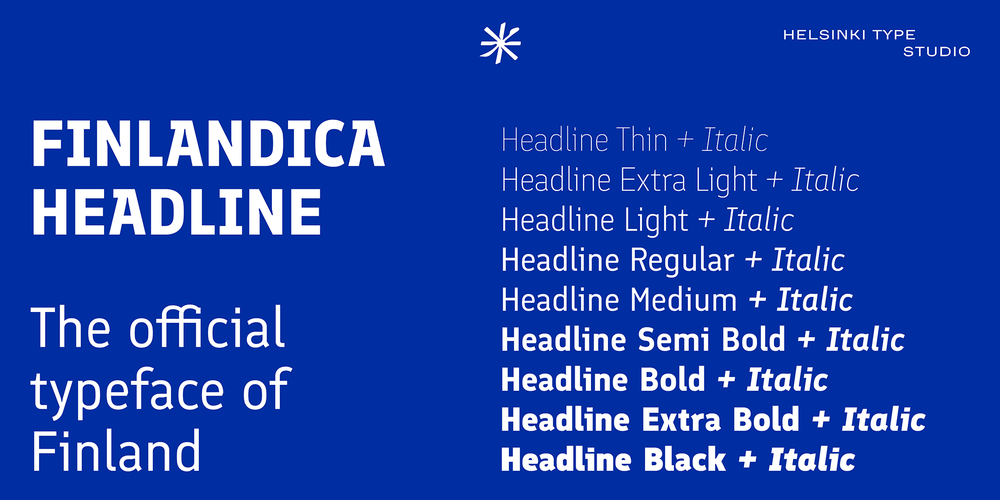

Finlandica is the official typeface of Finland, commissioned by the Prime Minister‘s Office, and free to use by everyone in the spirit of Jokaisenoikeus.
Finlandica Headline has strong and compressed shapes reflecting a distinctly Finnish sense of honest and resilient determination — Sisu. Counter shapes like cuts from a blunt axe improve clarity at small sizes while adding character at headline scale.
The companion typeface Finlandica Text is designed to complement the unique character of Headline with quiet clarity for body text. Finlandica supports a wide range of Latin and Cyrillic scripts.
To contribute, see github.com/HelsinkiTypeStudio/FinlandicaHeadline.
